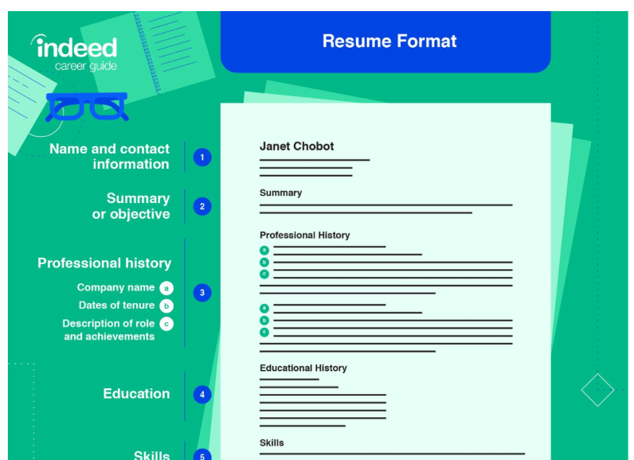
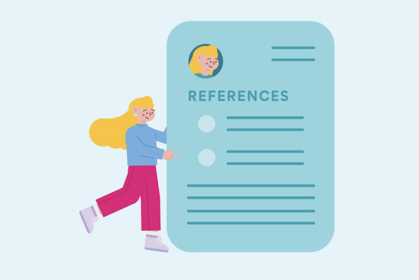

Resources to Build your Resume
-
Visit following webpages to learn about resume skills and tips on how to building a resume that will stand out. You can also view resume templets and samples.
- resumegenius.com
- Indeed.com

Professional References
-
Professional references are people who can speak to your qualifications for a job based on their insight into your work ethic, skills, strengths, and achievements.
- Ask a manager or former boss
- Ask your colleagues to vouch for you
- Know what your references will say about your work qualities